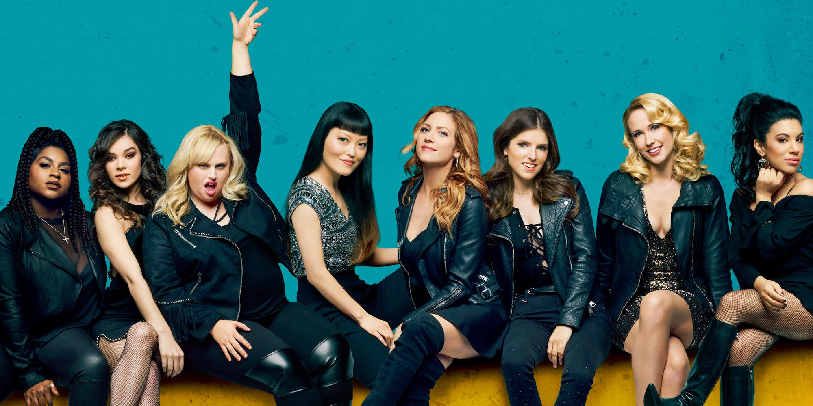

PITCH PERFECT I
Jason Moore
Het International Championship of Collegiate A Capella. De Barden Bellas worstelen echter met interne problemen. Beca en Jesse worden de hele tijd naar elkaar toe getrokken, maar Beca doet alsof ze geen interesse heeft, omdat het volgens de Barden Bellas regels verboden is.